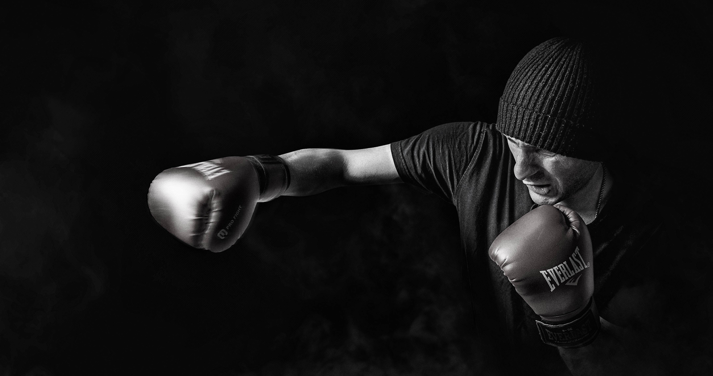

Tyson Fury is one of the greatest heavyweight boxers in the world.
Although he has had very tough fights against very good boxers his
biggest battle was against depression and to overcome suicidal
thoughts. After his fight against Wladimir Klitschko in 2015, Tyson
did not want to fight at all and loss all motivation to ever step
in the boxing ring again because he achieved his lifelong dream ever
since he was a kid to beat Wladimir.

The Road to Rock Bottom
After Tyson Fury beat Klitschko, he lost his boxing championship
belt since he was supposed to fight Klitschko again as it was in his
contract that he signed but it never amounted to anything. Tyson
was so obsessed with his lifelong dream of beating Klitschko that
once he beat him, he did not have anything to do with his life. He
never thought of what he was going to do after the biggest win of
his career. Tyson Fury started going to the pub and start drinking
as many as 20 pints of beer in one go as well as go on several
eating marathons. Tyson also started taking illegal substance such
as Class A drugs and recreational drugs. Under the influence of
alcohol Tyson used to feel like he was on top of the world and
thought of himself as the best boxer in the world. Once he was in a
state of consciousness, he would be depressed and lost all
motivation to do anything in life.
Suicidal Thoughts
Tyson Fury’s mental condition deteriorated to the point that he
wanted to kill himself. Tyson Fury talked to his father as to how he
felt and consulted one of the best clinical psychologists in UK.
Tyson explained his situation to his doctor. The doctor had a one
on one conversation with his father and said that Tyson should have
been dead a long time ago but there is something that is keeping
him alive and that he shouldn’t be left alone as he could commit
suicide anytime. Due to Tyson an excessive amount of alcohol as
well as eating a large amount of junk food, he amassed a
staggering 400 lbs. Tyson recalls that one night after coming back
home he went to his room and started crying and his t-shirt
became wet because of all the tears and he just prayed to god
that he doesn’t die, that prayer gave him hope. After ten minutes
or so, he went to the kitchen to talk to his wife and told his
wife that from the next day he is going to go on a run and turn
his life around. At first his wife did not think much of as
Tyson would say it every time he came back home after a night
out but afterwards she felt something different in his voice
when he said it.

The Rise
Tyson started to gain his life back and got a new gym to train in as
well as new coaches and a new promoter. He set goals for himself
such as losing weight and start boxing again. At first Tyson
struggled to keep up but after a couple weeks training felt like a
breeze and his psychologist deemed him medically fit to fight. He
got his boxing license back and got clear of all the lawsuits
against him such as doping and PEDs allegations that were put
against him. He started fighting again and was booked for a mega
fight against Deontay Wilder only in his third fight back. He got
brutally got knocked down in that fight but got back up and the
first of three fights between the two ended in a draw. Tyson would
go onto win the next two fights against Deontay and would self as
the greatest of all time.
Conclusion
Even a man as big and as fierce as Tyson Fury can go through
depression. You are not alone. Tyson Fury has shared his fury and
overcame depression by setting goals for himself to accomplish and
he stayed motivated to accomplish those goals